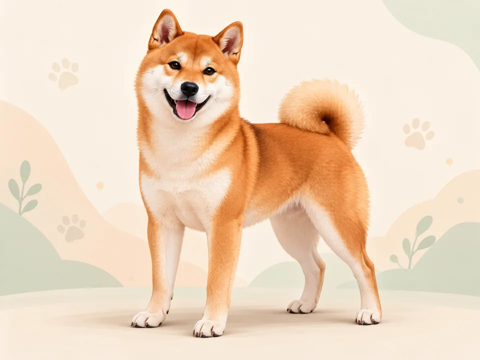
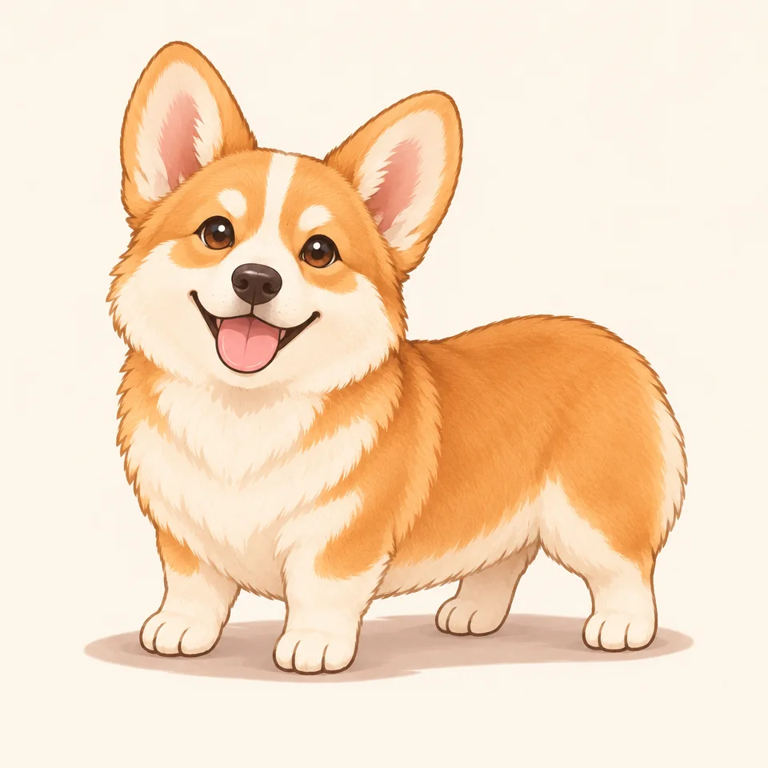

A LITTLE GUIDE TO BIG COMPANIONS
把好奇，
變成理解。
從個性、日常活動到照護提醒，認識每一種狗狗的不同。選擇陪伴之前，先學會好好理解牠。
20犬種資料
04專屬插畫
01持續更新的圖鑑


EVERY DOG HAS A STORY 從犬種認識開始，尊重每一個獨特的個體
THE FIELD GUIDE · 01
尋找你的犬種靈感。
用名稱搜尋，或依體型探索。點選卡片可看完整犬種介紹。
THE BREED INDEX
20 DOGS & COUNTING
20 DOGS & COUNTING
這裡暫時找不到呢
試試其他名稱或體型，看看會找到甚麼新朋友。
AN IMPORTANT REMINDER品種是參考，
品種是參考，
個體才是故事。
每隻狗狗的個性、經驗與健康狀況都可能不同。網站內容屬入門教學摘要；真正的飼養決定，仍需要考慮時間、居住環境、照護成本及個別犬隻的需求。